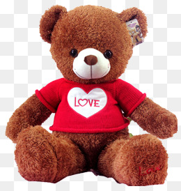

I have many toys in my childhood and at different stages, I prefer different toys. However, among them, a Teddy bear is the most special one to me and I still keep it at my closet until now.\n\nI guess that all kids love a furry friend and so did I. However, what made the bear really special to me was that this was a gift from my father on an occasion of my 5th birthday. Everything about it was so different from other stuffed bears. At that time, my father was working far away and I missed him so much. I thought that he could not come back to celebrate my birthday party as he had did before. To my surprise, on my birthday, he suddenly came home and brought with him a lovely Teddy bear. Missing him, I ran into him and my father gave me big hug, then kissed me. I was so excited about the Teddy bear. When I squeezed it, it said I LOVE YOU by the most sweet and lovely voice on Earth.\n\nLooking at it made me immediately think about my beloved father. His physical presence on my birthday was like gold to me. You know, it is really hard to not have one of the most important people to you in your birthday. I would never forget that special moment and the Teddy bear means so much to me.\n \n\n\n"